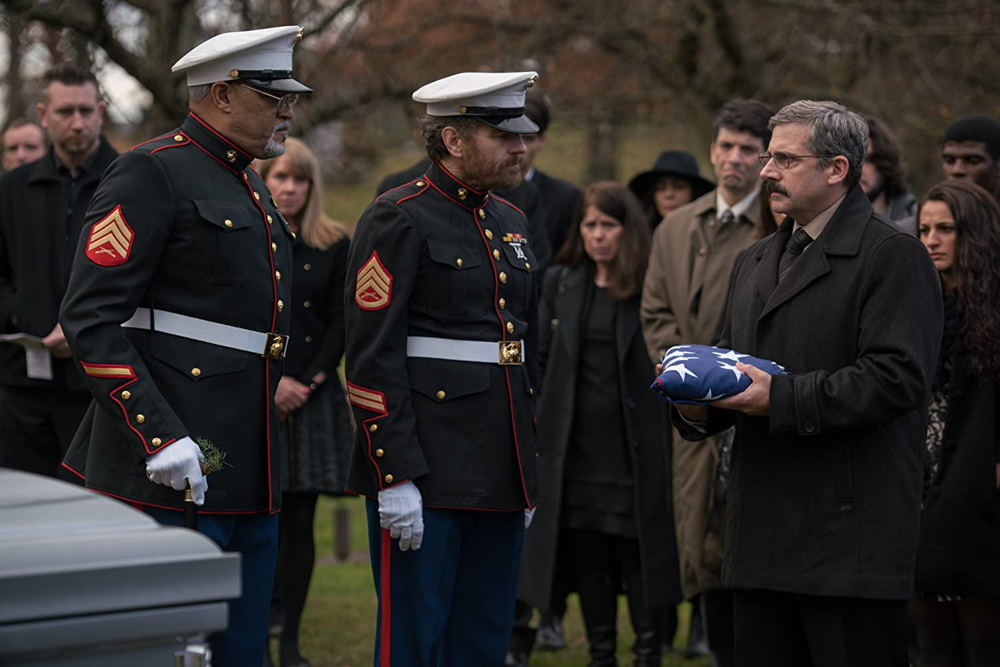

Last Flag Flying is a 2017 drama/comedy directed by Richard Linklater. Steve Carell stars as Vietnam veteran Larry “Doc” Shepherd who gets news about his son’s death overseas in Iraq. He reconnects with his old war buddies Sal (Bryan Cranston) and Mueller (Laurence Fishburne) in order to bring the body back home to be properly buried. I had heard about this film quite a while ago but was only interested now because it was to be the subject of an episode for a podcast that I help produce. I figured I would give it a shot, and I have to say, I am very pleasantly surprised. In a time where every movie that gets released is a massive Hollywood sized blockbuster, it was a nice change of pace to see a simple story about human beings.
With a story so based in chemistry and interaction between characters, the casting is something that is especially important. That being said, the performances are without a doubt this film’s strongest attribute. Watching the trio act together feels like you are spectating on real people as they crack jokes and tell stories about their pasts. If you told me that certain scenes were just improvised conversations that they left the cameras rolling for, I would not be surprised one bit. They just play off of each other so well. Bryan Cranston has an energy that is infectious, and Steve Carell proves that he can truly carry himself in a serious role. (His mustache bothered me quite a bit at first, but it definitely grew on me).

The story that is told here is one with themes of loss, age, and regret. Despite such heavy topics, it is handled in a way that isn’t overbearingly sad for the sake of simply provoking an emotional response. But when it does come time for those, they feel well deserved. We go on this journey with the characters. We grow with them, feel with them, and celebrate with them. I found it super strange that this film was categorized as being part comedy. Yes, it was funny, but to me it felt like humor was a defense mechanism used by the characters to make light of the terrible things they have seen and feel currently. It made the jokes feel all the more heartbreaking when you hear Cranston quipping about the prostitutes they saw overseas in Vietnam, only for his smile to slowly fade as the other memories all come flooding back. This shared feeling is what helps them bond. While the journey to retrieve the body is the overarching plot, the character study of the people doing it is where the meat of the story really lies.
There are a few sequences towards the middle that drag on a little bit. Even with the fantastic dialogue, there are only so many times you can see people talking on a moving train before it feels just a little bit repetitive. It also suffers from the industry-standard sad piano music that serves as a reminder of when you are supposed to feel an emotion, which is completely unnecessary for the viewers that are actually paying attention. It is rare that a movie can convey the horrors of war through only conversation, and I think it does its job as a character study in that regard. Everyone has so many layers to them that each time I peel back one layer, I discover a few more. For that reason alone, I recommend giving it a watch. The exploration of so many human emotions can feel a little bit messy at times, but then again, so are human beings. And I think that is the point.
I have read some articles questioning the validity of some situations portrayed in the show, but I am not here to talk about those. Looking at this show purely as a piece of cinema, it is seriously phenomenal. It is a masterclass in suspense and keeping viewers clicking next episode until the final credits roll. Even with its bleak themes, scary situations, and graphic imagery, it is a show I recommend to anyone with interest in just good old television. The acting, cinematography, set design, makeup, and writing come together to create a world that nobody would want to be in, but one that is hard to leave.